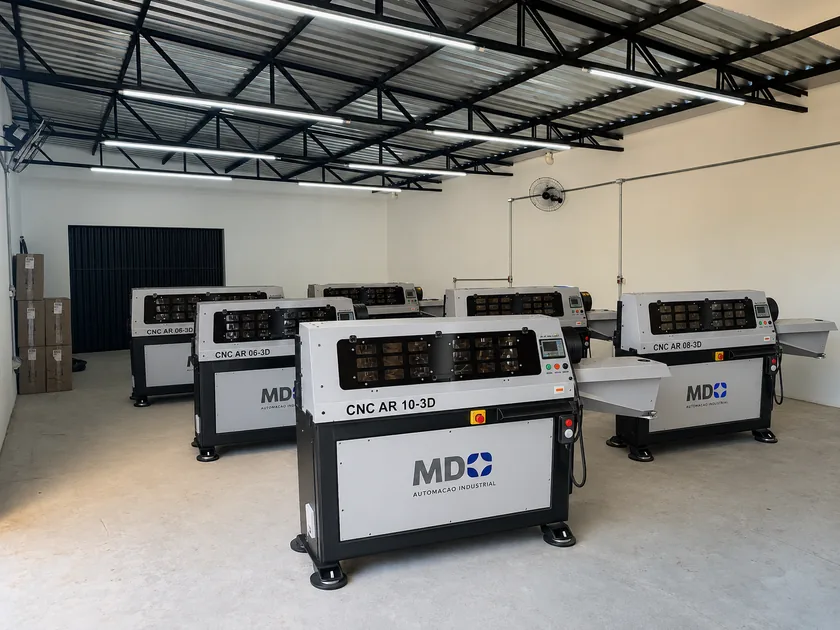

PÓS-VENDAS
Além de proporcionar uma experiência excepcional no momento da compra, mantemos nosso padrão de excelência no atendimento pós-venda, garantindo todo o suporte necessário para atender às suas necessidades.
ASSISTÊNCIA TÉCNICA
Equipe de profissionais altamente qualificados e especializados, disponíveis para oferecer assistência em todos os processos, desde o início até o período após a instalação.
TREINAMENTO
Garanta que sua equipe de operadores esteja plenamente capacitada para manusear as máquinas MDX com confiança e precisão, otimizando processos e elevando sua produtividade.
PEÇAS ORIGINAIS
Como todo o processo de fabricação é realizado internamente, garantimos peças de reposição originais disponíveis sempre que você precisar.
Sobre a MDX
MDX Automação Industrial é especializada no desenvolvimento e fabricação de máquinas e soluções para automação industrial, oferecendo tecnologia, inovação e alto desempenho para atender às necessidades dos mais diversos segmentos da indústria.
A empresa atua na fabricação de equipamentos padronizados e no desenvolvimento de projetos personalizados, sempre buscando proporcionar maior produtividade, precisão e eficiência aos processos de seus clientes.
Nosso portfólio inclui máquinas de conformação de arame e curvadora de tubos, desenvolvidos com engenharia própria, tecnologia de ponta e rigorosos padrões de qualidade, garantindo soluções confiáveis e duráveis para o ambiente industrial.
Mais do que fabricar máquinas, a MDX busca construir relações de confiança por meio de um atendimento próximo, suporte técnico especializado e compromisso com a excelência em cada projeto.

Nossa equipe está pronta para te atender
Entre em contato conosco
Envie uma Mensagem
Preencha o formulário e entraremos em contato em até 24 horas.
Nossas Máquinas

Máquina CNC AR 06-D3

Máquina CNC AR 08-3D

Máquina CNC AR 10-3D

Curvadora de Tubos CT-25
Perguntas Frequentes
Quais materiais as máquinas CNC MDX processam?
As máquinas MDX são compatíveis com uma ampla variedade de materiais, Consulte nossa equipe para verificar compatibilidade específica com o seu processo.
A MDX realiza instalação e treinamento?
Sim. Oferecemos suporte completo desde a instalação até o treinamento da equipe operacional, garantindo que seus profissionais operem as máquinas com segurança e eficiência máxima.
Como solicitar um orçamento?
Entre em contato pelo WhatsApp 14 99883-0768 ou pelo e-mail mdxmaquinas@gmail.com / marcelo@mdxmaquinas.com.br. Nossa equipe está pronta para te atender.
As máquinas possuem garantia e peças de reposição?
Sim. Todas as máquinas MDX têm garantia e, como o processo de fabricação é realizado internamente, as peças de reposição são 100% originais e sempre disponíveis.
A MDX atende fora de Bauru-SP?
Sim. Atendemos todo o território nacional. Entre em contato para verificar condições de entrega, instalação e assistência técnica para a sua região.